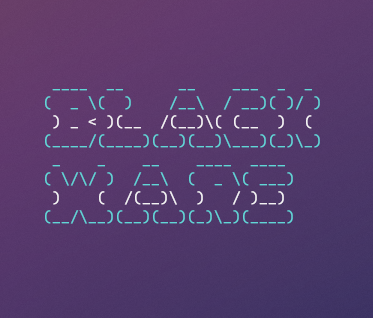

Blacklinux Home -
Blacklinux News -
Blacklinux Archive -
Blacklinux Support -
Downloads
Blacklinux Home -
Blacklinux News -
Blacklinux Archive -
Blacklinux Support -
Downloads
Blackware Linux 1.2 wurde veröffentlicht!
Blackware Linux 1.2 wurde am 28.04.2021 veröffentlicht, und bietet viele neue Features.
U. a. erschien' Blackware Linux EnterpriseX. Für mehr Informationen gehe zu den News.
Blackware Linux steht zum Download - Aber nur der Source Code
Der Source Code von Blackware Linux, und der blackware-linux.com website wurde freigegeben.
Du kannst die Downloadseite hier aufrufen!
Das Archive wurde eröffnet!
Es gibt nun etwas im Archive zum erforschen. Wie u. a. ein alter Souce Code der Website, oder anderes..!
Schau hier vorbei!
Fertigen Github Account von Blackware Linux
Der Github Account von Blackware Linux wurde verschönert, und hat nun ein schönes Orga-Icon.
Hier geht es zum Github Account

Das Profilbild von Blackware Linux
Blackware Linux 1.3.1 Update
Hier geht es zu den News
Blacklinux 1.4 Update kommt bald!
Bald kommt Blacklinux 1.4 raus. Die Distrobution wurde von Blackware-Linux zu Blacklinux umbennant. Mehr Infos kommen!
Hier geht es zu den Update-Abschnitt